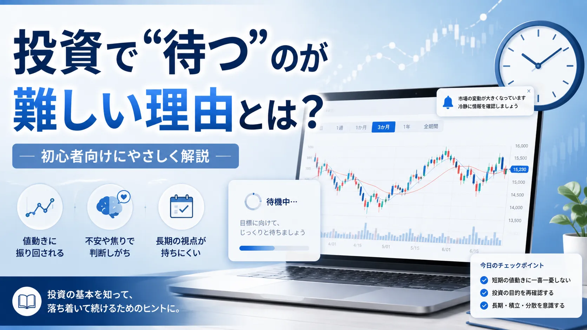

投資の基礎
投資で“待つ”のが難しい理由とは？
投資では「待つことが大切」とよく言われます。けれど、実際に自分のお金が増えたり減ったりすると、落ち着いて待つのは簡単ではありません。 含み損を見ると不安になり、少し利益が出ると早く確定したくなる。これは意志が弱いからではなく、人として自然な反応です。
Introduction
投資で一番難しいのは、買うことより“待つこと”かもしれない

投資を始める前は、「良さそうな商品を買って、あとは長く持てばいい」と考えやすいものです。 しかし実際には、買ったあとに価格が上下し、ニュースやSNSの情報が目に入り、気持ちが揺れやすくなります。
特に初心者のうちは、毎日の値動きがそのまま自分の成績のように見えてしまうことがあります。 そのため、長く持つつもりで始めたのに、少し下がっただけで売りたくなったり、少し上がっただけで利益確定したくなったりします。
この記事では、投資で「待つ」のがなぜ難しいのかを、感情・心理・値動き・長期投資の観点から整理します。 個別の売買判断ではなく、投資を続けるための考え方として読んでください。
Reason
なぜ投資では“待つ”ことが大切なのか
投資で待つことが大切と言われる理由は、短期の値動きを正確に読み続けるのが難しいからです。 株価や投資信託の基準価額は、企業業績だけでなく、金利、為替、景気、ニュース、投資家心理など、さまざまな要因で動きます。 値動きの基本は、株価はなぜ上下するのかでも整理しています。
Emotion
人は価格が動くと不安になりやすい
投資で不安になる大きな理由は、自分のお金が数字として毎日変わるからです。 普段の買い物では、買ったものの価値を毎日確認することはあまりありません。 しかし投資では、評価額や損益がすぐに表示されます。
含み損を見ると、失敗したように感じる
まだ売っていなくても、画面上でマイナスが出ると「間違えたかもしれない」と感じやすくなります。 ただし、投資では一時的な値下がりが起こることもあります。リスクの考え方はリスクとリターンの関係で整理しておくと理解しやすいです。
SNSやニュースと比べると焦りやすい
SNSでは、うまくいった話や大きな利益の話が目立ちやすいです。 その結果、自分だけ遅れているように感じて、予定していなかった売買をしたくなることがあります。
毎日チャートを見るほど、短期目線になりやすい
長期で考えるつもりでも、毎日チャートを見ると「今日の上げ下げ」が気になりやすくなります。 買うタイミングの考え方は株はいつ買えばいい？にもつながりますが、目的と期間を分けて考えることが大切です。
Psychology
上がっても下がっても焦ってしまう理由
投資が難しいのは、価格が上がっても下がっても感情が動くところです。 下がれば不安になり、上がれば「今のうちに利益を確定したい」と思いやすくなります。
上がったとき
利益が消えるのが怖くなり、早く売りたくなることがあります。 ただ、売る理由が「怖いから」だけになっていないかは確認したいところです。
下がったとき
損失が広がる不安から、すぐに手放したくなることがあります。 損切りが必要な場面もありますが、事前のルールなしに動くと判断がぶれやすくなります。
横ばいのとき
なかなか増えないと退屈になり、別の商品へ乗り換えたくなることがあります。 しかし、根拠の薄い乗り換えはコストやリスクを増やす場合があります。
売るタイミングについては、利益確定や損切りの考え方を株はいつ売ればいい？で別途整理しています。 大切なのは、上がったから売る、下がったから売るではなく、「なぜ売るのか」を言葉にできる状態にしておくことです。
Risk
“待てない投資”がギャンブル化しやすい理由
待てないこと自体が悪いわけではありません。 ただし、感情だけで売買を繰り返すと、投資というよりも「次に上がりそうなものへ賭け続ける行動」に近づきやすくなります。 投資とギャンブルの違いは、投資とギャンブルの違いとは？でも詳しく整理しています。
- 値下がりが怖くて、理由を確認せずにすぐ売ってしまう
- SNSで話題の商品へ、根拠なく乗り換えてしまう
- 損を取り返そうとして、取引回数や金額を増やしてしまう
- 最初に決めた目的や期間を忘れて、短期の結果だけを見る
このような行動は、初心者がつまずきやすいポイントでもあります。 関連して、投資で失敗する人の共通点や投資でやってはいけないこと5選も確認しておくと、避けたい行動を整理しやすくなります。
How to continue
投資で待つためにできる工夫
「気合いで待つ」だけでは、値動きが大きいときに苦しくなります。 だからこそ、待ちやすい仕組みを先に作っておくことが大切です。
-
余裕資金で始める
生活費や近いうちに使うお金で投資すると、少しの下落でも不安が大きくなります。無理のない金額にするだけでも、待ちやすさは変わります。
-
投資目的と期間を決める
老後資金、教育費、将来の資産形成など、目的があると短期の値動きに振り回されにくくなります。
-
毎日見すぎないルールを作る
長期投資や積立投資が目的なら、確認頻度を週1回、月1回などに決めるのも一つの方法です。
-
積立設定を使う
毎回自分で買う判断をすると、価格に迷いやすくなります。積立の仕組みを使うと、感情を挟む回数を減らしやすくなります。
-
分散して一つに集中しすぎない
一つの商品に集中すると、その値動きだけで気持ちが大きく揺れます。分散の考え方を持つことで、不安を和らげやすくなります。
Summary
まとめ：待てないのは自然。だからこそ仕組み化する
投資で待つのが難しいのは、意志が弱いからではありません。 自分のお金が毎日動き、含み損やニュース、SNSの情報が目に入れば、不安になるのは自然なことです。
だからこそ、投資を続けるには「気持ちが揺れない自分」になるよりも、揺れても判断を急がない仕組みを作ることが大切です。 余裕資金で始める、目的を決める、確認頻度を決める、積立や分散を使う。 こうした小さな工夫が、長く続ける助けになります。
Next Reading
長く続けやすい投資の考え方を知りたい人へ
長く続けやすい投資の考え方を知りたい人は、長期投資・積立投資・証券会社選びの記事も参考にしてください。 いきなり商品を選ぶより、まずは自分に合う続け方を整理すると迷いにくくなります。
よくある質問
-
Q. 投資で待つのが苦手なのは悪いことですか？
悪いことではありません。値動きで不安になるのは自然な反応です。大切なのは感情だけで判断しないためのルールを作ることです。 -
Q. 毎日チャートを見るのはよくないですか？
短期売買でなければ、毎日の値動きに振り回される原因になることがあります。目的に合わせて確認頻度を決めることが大切です。 -
Q. 待つためには何をすればいいですか？
余裕資金で始める、積立設定を使う、投資目的を決める、分散するなどの工夫があります。
ご利用にあたっての注意事項
本記事は情報提供を目的としており、投資の勧誘や個別の売買判断を目的としたものではありません。株式・投資信託・外国証券等の取引は元本保証がなく、相場変動等により損失が生じる場合があります。取引開始前に、契約締結前交付書面や商品説明書、目論見書等を必ずご確認のうえ、ご自身の判断と責任でお取引ください。